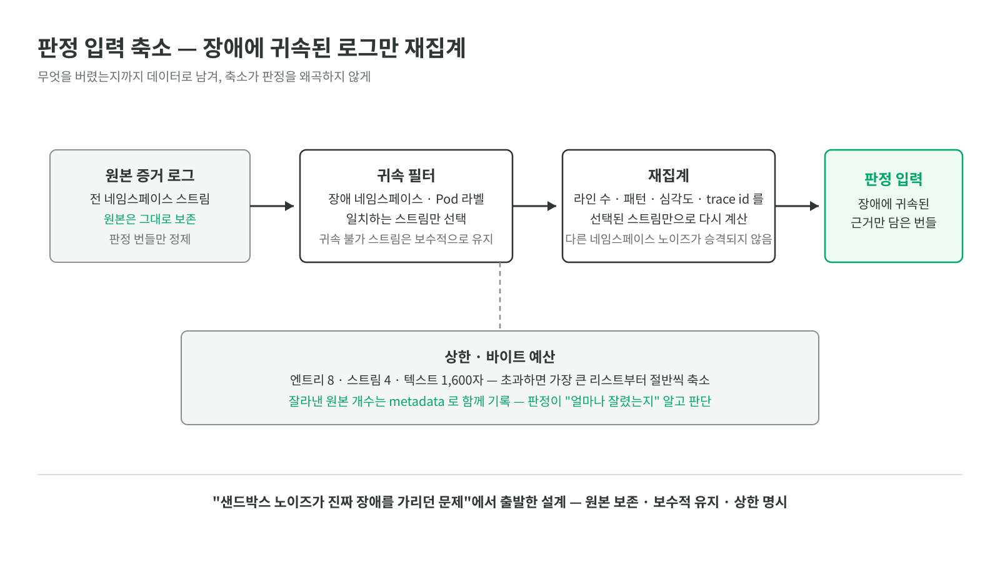

Selected case study · Team project
Kyro
Kubernetes 장애 증거를 규칙으로 해석하고, 제한된 변경만 GitHub Draft PR로 제안하는 팀 프로토타입
- 기간
- 2026.06.22 — 2026.07.25
- 역할
- 팀장 · 장애 처리 파이프라인 · 규칙 기반 원인 분석 · GitOps 복구 경계
- 검증
- ImagePullBackOff 1개 흐름을 처음부터 끝까지 확인

말보다 실물이 빠릅니다. 크래프톤 정글 공식 채널(Jungle Dev Club)에 올라간 발표 · 시연 영상입니다.
영상: Kyro — AI Agent 기반 Kubernetes 배포 및 운영 자동화 서비스 (크래프톤 정글 공식 채널)
풀려던 문제
자동 복구에 어느 정도 권한을 줄 수 있을지부터 정했습니다. 결론은 클러스터 쓰기 권한을 주지 않고, 사람이 검토할 변경 제안까지만 맡기는 것이었습니다.
맡은 일
- 장애 증거, 원인 판정, 변경 제안, 사후 확인을 사건 ID로 연결하는 파이프라인 설계
- YAML 카탈로그를 읽어 Kubernetes 징후별 원인 후보를 제안하는 규칙 엔진 구현
- 카탈로그 변경 때 후보 연결과 근거 부족 시 보류가 깨지지 않는지 합성 회귀 입력으로 점검
- 허용된 manifest 변경만 GitHub Draft PR로 제안하도록 patch allowlist·전달 정책·base SHA 재확인 구성
- 실제 완결 검증 범위:
ImagePullBackOff한 흐름. 실사용 트래픽과 외부 Kubernetes·GitHub E2E는 미수행
복구 권한 경계
코드에서 복구 경로는 GitHub Draft PR로만 제안하도록 좁혔습니다. Deployment의 허용된 필드만 바꾸는 patch allowlist, pull_request 외 전달을 거부하는 정책, PR 생성 직전의 base SHA 재확인이 그 경계입니다. 에이전트 RBAC은 get·list·watch만 부여하고, Helm 렌더 결과는 쓰기 verb와 금지 리소스를 정적 검사합니다.
이 내용은 저장소의 코드·manifest·계약 테스트에서 확인한 범위입니다. 실제 GitHub App과 외부 클러스터에 연결해 PR 생성부터 배포·복구까지 검증한 것은 아닙니다. 자세한 설계와 한계는 복구 권한을 Draft PR로 좁힌 이유에 적었습니다.
카탈로그 회귀 평가
원인 판정 규칙은 YAML 파일 15개에 나눴습니다. 현재 카탈로그에는 룰북 29개와 원인 후보 참조 87개가 있고, 고유한 candidate_id도 87개입니다. 데이터 모델은 후보 재사용을 지원하지만 현재 카탈로그에서 룰북끼리 공유하는 후보는 없습니다. 이 숫자는 Kubernetes 전체 장애 범위나 운영에서 확인한 원인 수가 아닙니다.
build_golden_set.py는 같은 카탈로그에서 합성 입력 116개를 만듭니다. 후보마다 판별 신호를 하나 넣은 긍정 입력 87개와, 룰마다 판별 신호를 넣지 않은 입력 29개입니다. run_eval.py는 이 합성 Incident와 EvidenceBundle을 규칙 엔진에 직접 넣어 후보 연결과 근거 부족 시 보류 동작을 확인합니다.
입력과 기대 결과가 같은 카탈로그에서 파생되므로, 이 평가는 실제 Kubernetes 로그의 정확도나 운영 복구 성과를 뜻하지 않습니다. 카탈로그를 바꿀 때 loader·schema·matcher 연결과 신호가 없을 때의 보류 동작이 깨지는지 확인하는 회귀 점검입니다. 실제로 한 흐름을 끝까지 검증한 범위는 ImagePullBackOff입니다. 규칙 카탈로그 글과 LLM fallback 설계 메모에서 구현 범위와 다음 단계를 구분했습니다.
판정 입력 축소 — 장애에 귀속된 로그만 재집계
다른 네임스페이스의 노이즈가 진짜 장애를 가리는 문제에서 출발했습니다. 장애와 무관한 스트림이 판정 입력에 섞이면 원인이 흐려집니다. 장애 네임스페이스 · Pod 에 귀속되는 스트림만 남기고, 라인 수 · 패턴 · 심각도 · trace id 를 선택된 스트림만으로 다시 집계했습니다.

세 가지 원칙을 지켰습니다. 원본 증거는 그대로 보존하고 판정 번들만 정제합니다. 라벨이 없어 귀속을 판단할 수 없는 스트림은 버리지 않고 보수적으로 유지합니다. 상한(엔트리 8 · 스트림 4 · 텍스트 1,600자)과 바이트 예산을 넘겨 잘라낼 때는 원본 개수를 metadata 로 함께 기록해, 판정이 “얼마나 잘린 데이터인지” 알고 판단하게 합니다.
서비스 사이의 일을 이벤트로 나누기
팀은 장애 처리 단계를 도메인별 게이트웨이와 워커로 나누고 NATS JetStream 이벤트로 연결했습니다. 저는 전체 흐름과 서비스 간 인터페이스를 설계했습니다. 이벤트 이름에서 이미 일어난 사실과 처리 요청을 구분하고, 스트림에는 보존 기간과 용량 상한을 뒀습니다.
상태 변경과 이벤트 기록이 갈라지지 않도록 팀 구현에는 Transactional Outbox가 들어갔습니다. relay 재처리와 중복 발행 가능성은 임대 시간·메시지 ID·DLQ로 다뤘습니다. 종료 후에는 AWS 청구서를 분석했고, 별도의 로컬 전송 마이크로벤치마크에서 왕복을 줄인 경로를 비교했습니다. 이 측정은 전송 계층만의 결과이며 전체 서비스 처리량이나 운영 성과가 아닙니다.
저장소에는 EKS·일반 Kubernetes·로컬 Docker Compose용 구성이 있지만, 외부 클러스터와 GitHub까지 연결한 전체 경로는 검증하지 않았습니다.
복구 확인 — 연속 5분이 유지될 때만 “복구됨”
코드에서는 PR merge를 복구 완료로 보지 않습니다. 배포 뒤 새 증거를 다시 받아 연속 5분의 안정화 창을 확인하고, 수집이 끊기거나 복구 전 baseline이 없으면 판정을 보류합니다. 같은 워크로드라도 SLI 시계열의 identity가 달라지면 비교하지 않습니다. 이 로직은 계약 테스트로 확인했지만, 외부 클러스터 배포 뒤 실제 복구까지 이어지는 E2E는 수행하지 않았습니다.
운영 데이터 정합성 검사 (종료 후 개인 확장)
프로젝트 종료 후 혼자 확장한 계층입니다. 수집이 성공해도 데이터는 어긋납니다. 원천이 필드 타입을 바꾸거나, 같은 날짜가 두 번 적재되거나, 어제부터 아무것도 들어오지 않는 경우입니다. 판정이 쓰는 데이터가 맞는지 매일 확인하는 계층을 만들었습니다.
PostgreSQL 에 자산 · 계약 · 관측 이력 · 계보를 나눠 담고, 유일 제약으로 재실행해도 행이 늘지 않게 고정했습니다. 스키마 변형 · 최신성 · 계보 단절 · 중복 적재를 일일 배치로 검사합니다.
정상 데이터만 넣어서는 검사가 실제로 실패를 잡는지 알 수 없었습니다. 원천 중단·필드 타입 변경·중복 적재를 넣는 고장 주입 절차를 만들고, 상시 통과하던 검사 결함을 찾아 수정했습니다. 60만 관측 행의 합성 데이터에서는 검사 질의의 인덱스를 바꿔 전체 소요를 424.5ms에서 150.0ms로 줄였습니다. 운영 데이터나 반복 사용자로 확인한 결과는 아닙니다.
더 깊은 기록
가장 어려웠던 세 문제는 각각 글로 남겼습니다.
- 장애 원인 판정을 YAML로 뺀 이유 — 카탈로그와 합성 회귀 입력의 역할
- LLM fallback을 붙이기 전에 정할 것 — 아직 구현하지 않은 설계 경계
- 아무것도 못 잡던 검사 두 개 — 고장 주입으로 찾은 결함
한계
실사용 트래픽은 없었고 운영 복구 시간도 측정하지 않았습니다. 전송 계층 벤치마크와 합성 회귀 평가는 로컬 구성요소를 확인한 결과일 뿐, 외부 클러스터 E2E나 운영 성능을 대신하지 않습니다.
확인하는 방법
규칙 카탈로그 회귀는 evals/build_golden_set.py와 evals/run_eval.py로 확인할 수 있습니다. 결과 이력은 evals/results.md에 남아 있습니다. 이 명령은 같은 카탈로그에서 입력과 기대 결과를 만들기 때문에 loader·schema·matcher의 회귀 확인 범위로 읽어야 합니다. 외부 Kubernetes와 GitHub를 연결한 E2E 명령은 아닙니다.